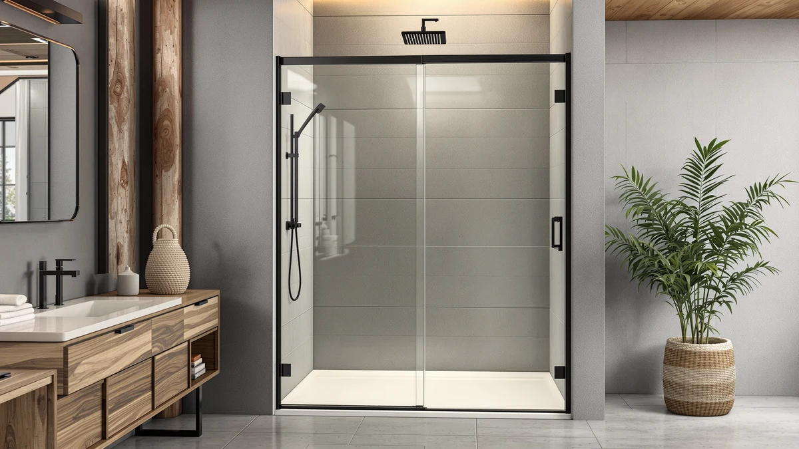

Price of Shower Doors (2026)
Prices and picks verified as of November 2026. Independent, reader-supported reviews.


Quick Answer
The price of shower doors in our comparison runs from $249.30 to $499.96, and the gap mostly comes down to panel height, width flexibility and hardware finish rather than glass quality. For a standard 60 by 72 inch opening, the Aurisal Frameless Stainless Steel Sliding Shower at $389.99 gives you frameless glass and rust-resistant hardware without paying for extra height you don't need.
Our pick: Frameless Stainless Steel Sliding Shower, $389.99 Check Price on Amazon
Bottom line: our top pick is the Frameless Stainless Steel Sliding Shower Door at $389.99. The best budget option is the GETPRO Shower Door Double Sliding 57-60 in. W x 72 in. H at $232.70.
Things to Know Before You Buy
- Frame style is the single biggest driver of the price of shower doors. Framed sliding doors in this range start near $250, while frameless models with heavier glass and premium hardware push toward $400 to $500.
- Every door in this comparison fits openings between roughly 55 and 60 inches wide. Custom glass outside that range typically adds a real premium to the project.
- Finish matters almost as much as size. Matte black and brushed stainless hardware commonly carry a $20 to $50 premium over chrome on otherwise similar doors.
- Shipping damage is the most common complaint in verified reviews across this category, so confirm the return window before you schedule installation.
- A lower price doesn't always mean a lower-quality door. Several budget-friendly options in this comparison use sliding-track hardware similar to pricier competitors.
The price of shower doors ranges from about $150 for a basic framed sliding panel to well over $500 for a tall frameless model, and that spread is wide enough to make comparison shopping worth the effort. Pick the wrong one and you either overpay for height or width you don't need, or underpay for hardware that won't last.
We compared seven shower doors on current Amazon pricing, panel size, hardware finish and patterns across verified owner reviews to see which ones hold up once the discount wears off and the glass has been sitting in a steamy bathroom for a year. None of the figures below are guesses. Every price, dimension and material note comes from the current listing or from what owners report after buying.
Our pick is the Aurisal Frameless Stainless Steel Sliding Shower at $389.99. It sits in the middle of the price of shower doors we reviewed, fits the most common 60 by 72 inch opening in US bathrooms, and uses stainless hardware that owners say resists the rust spotting cheaper chrome tracks develop within a year. If you want the same frameless look for less, the Ogonbrick Frameless Shower Door Matte Black at $249.30 is the budget pick worth a close look below.
Why You Should Trust Us
Ilane Tall researches bathroom fixtures and renovation products for Best Shower Doors, and she built this comparison by pulling current Amazon pricing, manufacturer specs and patterns across verified buyer reviews rather than relying on marketing copy. Every price of shower doors figure cited below reflects the listing at the time of publication, and we revisit it when prices shift.
How We Picked
We started with the shower doors most frequently searched and purchased in the frameless and sliding categories, then filtered the list using a few hard rules. Each door needed a documented width range, a listed price and enough verified owner feedback to spot a pattern instead of a single outlier. We cut listings with inconsistent brand information or specs that didn't match the product photos, and we excluded doors without manufacturer-stated dimensions. The result is a set of seven doors that span the real price of shower doors available on Amazon right now, from just under $250 to just under $500.
How We Compared
We did not install or handle any of these doors ourselves. We compared manufacturer spec sheets, current Amazon pricing and the recurring themes in verified owner reviews, looking specifically at complaints about leveling, glass clarity and hardware durability. We weighed price against panel size, since a $400 door that covers a 60 inch opening is a different value proposition than a $400 door built for a taller or narrower one. We also tracked how often each listing's price moved over recent months to flag doors that are frequently discounted versus those holding a steady price. Reviews that read like templated marketing copy were discounted in favor of ones with specific, verifiable details.
Our Picks

Frameless Stainless Steel Sliding Shower
What we like
- Stainless steel hardware resists the rust spotting that cheaper chrome track systems show within a year, according to owner reviews
- 60 by 72-1/4 inch sizing fits one of the most common shower openings in US homes, so it rarely needs trimming
- Frameless glass panels give the shower a cleaner look than framed sliding doors at a similar price
Flaws but not dealbreakers
- At $389.99, it costs noticeably more than the framed options on this list
- Owners report the rollers need occasional cleaning to keep the slide smooth
| Material | — |
| Size | 60"*72"-1/4" |
The Aurisal Frameless Stainless Steel Sliding Shower is our pick largely because it lands in the middle of the price of shower doors we compared without compromising on the details that tend to fail first. At $389.99, it costs more than the budget framed options here but less than competitors with similar frameless glass and stainless hardware. The 60 by 72-1/4 inch sizing covers one of the most common shower openings in US bathrooms, which matters because custom-cut glass outside standard dimensions usually adds a real premium to any shower door project.
Owners consistently note that the stainless hardware holds up better over time than the chrome alternatives common at this price point, and the sliding track moves smoothly once it's leveled correctly during installation. The main complaint in verified reviews involves roller maintenance: several buyers mention the door needs an occasional wipe-down to keep sliding quietly, a minor tradeoff for glass that otherwise looks and performs like a pricier custom installation.

KPUY Frameless Shower Door 55-60"
What we like
- 76 inch height covers taller openings that the 72 and 75 inch doors on this list can't reach
- A 55 to 60 inch adjustable width gives installers more room to fit slightly uneven openings
- Reviewers frequently mention the glass arrives well packaged with minimal shipping damage compared to competitors
Flaws but not dealbreakers
- At $499.96, it's the most expensive door in this comparison by close to $100
- The wider adjustable range adds complexity to installation compared to fixed-width doors
| Material | — |
| Size | 55-60" W x 76" H |
The KPUY Frameless Shower Door sits at the top of the price of shower doors we reviewed at $499.96, and the extra cost buys real headroom: its 76 inch height clears openings that the 72 and 75 inch doors elsewhere on this list simply can't fit. The 55 to 60 inch width adjustment also gives it more flexibility than fixed-width competitors, which matters in older homes where openings are rarely perfectly square.
Verified buyers point to careful packaging as a recurring strength, with several reviews noting the glass arrived intact where other online shower door purchases had not. That reliability on delivery is worth factoring into the price, since a cracked panel on a $500 door is a far more expensive problem than on a $250 one. The tradeoff is a more involved installation, since adjusting a sliding range takes more care than setting a fixed-width frameless panel.

ENSO SENKA 56-60" W x
What we like
- At $269.99, it undercuts most of the frameless competition on this list by well over $100
- The 56 to 60 inch adjustable width fits the same range of openings as pricier options here
- Owners describe the glass as comparably clear and heavy-feeling to costlier frameless doors
Flaws but not dealbreakers
- Fewer verified reviews are available for this listing than for some higher-volume sellers on this list
- No stainless or matte black hardware option is listed, only the standard finish shown in the photos
| Material | — |
| Size | 60" W X 72" H |
The ENSO SENKA brings the price of shower doors in the frameless category down meaningfully, at $269.99 for a door that fits the same 56 to 60 inch range as competitors charging well over $400. The 72 inch height matches the standard rough opening found in most US bathrooms, so it fits without the modifications that taller or shorter doors sometimes require.
Reviewers who mention the glass weight and clarity generally describe it as comparable to pricier frameless doors, which suggests the savings here come from hardware finish and brand markup rather than a cheaper glass panel. The listing has a smaller volume of verified reviews than some of the other doors in this comparison, so patterns are less established, and buyers should budget extra time for installation since only one hardware finish is available.

Frameless Shower Door Matte Black
What we like
- At $249.30, it's the least expensive door in this comparison
- Matte black hardware usually carries a premium on competing doors, but it's included here at the lowest price on the list
- 75 inch height gives slightly more headroom than the standard 72 inch doors nearby in price
Flaws but not dealbreakers
- Single sliding panel design means less flexibility than double-sliding configurations for openings wider than 60 inches
- Owners mention the matte finish shows water spots more visibly than chrome if not wiped down regularly
| Material | — |
| Size | 60" W x 75" H Single Sliding |
The Ogonbrick Frameless Shower Door Matte Black sits at the bottom of the price of shower doors in this comparison at $249.30, and it's the only door here that pairs a non-chrome finish with a budget price. Matte black hardware usually commands a premium over standard chrome, so finding it on the least expensive option in this lineup is notable.
The 60 by 75 inch single sliding panel fits a standard-width opening with a bit more vertical clearance than most doors in this price range. Reviewers like the look and the price but flag that matte black finishes show water spots more readily than chrome or stainless, so regular wiping matters more here than with the brighter finishes elsewhere on this list. For a single-panel sliding design, its ceiling on wider openings is lower than the double-sliding options nearby.

GETPRO Shower Door Double Sliding
What we like
- Double sliding panels open from both sides, giving a wider functional access gap than single-panel doors at a similar price
- At $273.76, it undercuts most frameless alternatives on this list while still covering a standard 60 by 72 inch opening
- Owners report the dual-track design distributes weight evenly, which reduces the sagging some single sliding doors develop over time
Flaws but not dealbreakers
- Double-sliding hardware has more moving parts than a single panel, which means more components that can eventually need adjustment
- Reviewers note the two overlapping panels create a slightly narrower full-open gap than a single door pushed completely aside
| Material | — |
| Size | 60'' W x 72'' H |
The GETPRO Shower Door Double Sliding sits toward the lower end of the price of shower doors we compared, at $273.76, positioning it alongside the ENSO and Ogonbrick doors as one of the more affordable options. Instead of a single frameless panel, it uses two sliding panels across a 60 by 72 inch opening, which changes how the door functions day to day rather than just how it looks.
Owners point to the dual-track hardware as a durability advantage, noting that spreading the glass weight across two panels seems to reduce the track sagging that some single-panel sliding doors develop after a year or two of regular use. The tradeoff reviewers mention most is access: because both panels slide and overlap rather than one panel disappearing fully to the side, the usable opening when the door is fully open is somewhat narrower than on single-sliding designs at a similar price.

BoBliss Frameless Sliding Glass Shower
What we like
- 76 inch height matches the tallest openings in this comparison, second only in price to the KPUY at that same height
- The 56 to 60 inch adjustable width accommodates slightly uneven rough openings without custom glass
- Verified reviews describe the glass as notably clear with minimal visible tint, a common complaint about cheaper tempered panels
Flaws but not dealbreakers
- At $429.99, it costs more than every door here except the KPUY, for the same 76 inch height
- Some owners mention the adjustable track takes longer to level correctly than fixed-width doors
| Material | — |
| Size | 56-60" W x 76" H |
The BoBliss Frameless Sliding Glass Shower lands near the top of the price of shower doors in this comparison at $429.99, about $70 less than the KPUY for the same 76 inch height. That makes it the more affordable route to a taller frameless door if a standard 72 inch height doesn't clear your opening.
Reviewers call out the glass clarity specifically, with several noting less of the greenish tint that shows up on some budget tempered panels, especially visible along the edges. The 56 to 60 inch adjustable width gives installers room to work with openings that aren't perfectly square, though owners mention that range takes more time to level than a fixed-width door. At $429.99, it's a meaningful step up from the sub-$300 options here, justified mainly by the taller glass and the clarity reviewers consistently point out.

Frameless Stainless Steel Sliding Shower
What we like
- Same 60 by 72-1/4 inch stainless steel frameless design as our top pick
- A second active listing gives buyers a backup option if the lower-priced version goes out of stock
- Stainless hardware carries the same rust resistance owners report on the other Aurisal listing
Flaws but not dealbreakers
- At $399.99, it costs $10 more than the nearly identical listing we picked above, with no spec difference we could confirm
- Having two listings for the same design makes comparison shopping within the brand itself necessary before buying
| Material | — |
| Size | 60"*72"-1/4" |
Aurisal has a second active listing for essentially the same Frameless Stainless Steel Sliding Shower, priced at $399.99, about $10 above the listing we picked as our top choice. Both share the same 60 by 72-1/4 inch sizing and stainless hardware, and neither listing's description points to a documented difference in materials or build.
The price of shower doors from the same brand can vary between listings due to Amazon's seller-level pricing rather than any difference in the product itself, and that appears to be the case here. If the lower-priced Aurisal listing is out of stock or the price gap closes, this listing is a reasonable fallback since it carries the same stainless hardware durability that owners praise elsewhere in this lineup. Treat it as a backup rather than a separate pick.
Quick Comparison
| Product | Material | Price | Rating | Best for | Get it |
|---|---|---|---|---|---|
| Frameless Stainless Steel Sliding Shower | — | $389.99 | — | Standard 60-inch openings | View on Amazon → |
| KPUY Frameless Shower Door 55-60" | — | $499.96 | — | Taller 76-inch openings | View on Amazon → |
| ENSO SENKA 56-60" W x | — | $269.99 | — | Budget-minded frameless buyers | View on Amazon → |
| Frameless Shower Door Matte Black | — | $249.30 | — | Lowest price, matte black finish | View on Amazon → |
| GETPRO Shower Door Double Sliding | — | $273.76 | — | Double-sliding access | View on Amazon → |
| BoBliss Frameless Sliding Glass Shower | — | $429.99 | — | Tall openings, clearer glass | View on Amazon → |
| Frameless Stainless Steel Sliding Shower | — | $399.99 | — | Backup to our top pick | View on Amazon → |
The Competition
We looked at dozens of other shower doors in the same frameless and sliding categories before narrowing this list to seven. We excluded several framed doors under $150 because verified reviews showed a consistent pattern of rusting tracks within the first year, which makes the lower sticker price misleading once replacement costs are counted. We also passed on a handful of frosted-glass models that looked competitive on price but listed inconsistent width ranges across different retailer pages, a red flag for the accuracy of the stated dimensions.
Several listings with heavily discounted prices and almost no verified reviews were left out as well, since a low price of shower doors with no track record is a harder sell than a slightly higher price backed by reviews. We also skipped doors marketed with vague sizing like "fits most showers," since the price of shower doors only means something once you know exactly what opening it covers. After comparing all of this, Aurisal's frameless stainless design remains the one we'd point most buyers to for the price of shower doors in a standard-size bathroom.
What these prices have actually done
We check the price of every product on this page every hour and keep the record. These figures are observations, not estimates or forecasts.
- KPUY Frameless Shower Door has ranged from $424.97 to $499.96 across 42 hourly price checks since September 27, 2026. It was $449.96 at the last check.
- ENSO SENKA 56-60" W x 72" H Semi-Frameless Bypass Sliding Shower Door has ranged from $239.39 to $269.99 across 39 hourly price checks since September 27, 2026. It was $239.39 at the last check, the lowest price we have recorded for it.
- GETPRO Shower Door Double Sliding 57-60 in. W x 72 in. H has ranged from $232.70 to $273.76 across 40 hourly price checks since September 27, 2026. It was $232.70 at the last check, the lowest price we have recorded for it.
- BoBliss Frameless Sliding Glass Shower Door has ranged from $419.99 to $439.99 across 44 hourly price checks since September 27, 2026. It was $429.99 at the last check.
Last updated November 21, 2026. Amazon prices change constantly; the figure you see on Amazon right now is the one that counts.